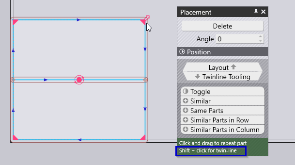

TwinLine
Twinline é um recurso do TecZone Laser que alinha bordas de partes adjacentes de modo que uma única passagem de laser corte simultaneamente ambas as bordas. Isso é obtido mantendo o espaço entre as partes adjacentes igual à largura do corte. O TwinLine leva a economias significativas em tempo de máquina e uso de material. O exemplo a seguir ilustra isso.
Nesting sem Twinline:
400 unidades de uma peça intercaladas no TecZone Laser sem opção Twinline: são necessárias duas chapas com um tempo total de passagem de 199,2 segundos.

Nesting com Twinline:
A mesma peça intercalada com a opção Twinline: Requer apenas uma chapa. Seu tempo de passagem é de 48,8 segundos.
Ativação
O Twinline pode ser usado tanto no fluxo de trabalho da peça quanto da tarefa.
No fluxo de trabalho da tarefa, as peças podem ser feitas por twinline, marcando a opção Twinline na aba de peças de uma tarefa.

No Fluxo de Trabalho da Peça, você precisa criar uma única peça (Shift + Clique no Ícone Quick-Nest). Para gerar várias peças com nesting de twinline, pegue um canto com o mouse e arraste o canto enquanto segura a tecla Shift.

| Uma vez que um bloco twinline é criado, atualmente não é possível explodi-lo manualmente em peças independentes. |
Pré-visualização da sequência de cortes
Para pré-visualizar os cortes e sua sequência, o usuário terá que abrir a guia Sequência. Nesta guia, todos os cortes de um grupo de twinline serão agrupados e listados na ordem em que serão cortados. O usuário pode percorrer esses itens usando as teclas para cima/para baixo do mouse para reproduzir a sequência em que os cortes são feitos.
| A sequência dentro de um grupo de twinline não pode ser modificada. O usuário não será capaz de mover o item individual/subconjunto de itens. Além disso, não é permitido dividir um grupo twinline colocando itens neste grupo. Apenas todo o grupo Twinline pode se mover junto. |